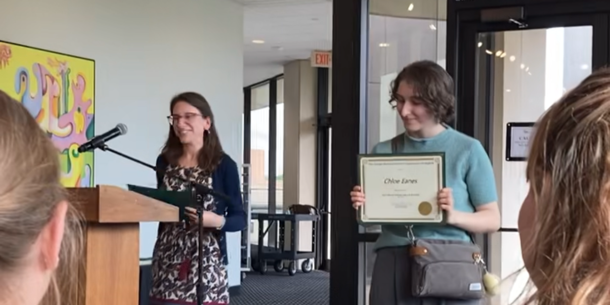

My College Education...So Far
Read Up on Some of the Courses I Have Taken:

Throughout my time in college, I have learned a wide variety of topics. However, my main focus is working toward my English degree and completing my minors in dynamic publishing and digital media and web design.
What I have accomplished
So far, I have obtained an associate of arts degree in liberal arts (with a concentration in English), graduating (as stated on my home page) summa cum laude. Many believe the "detour" to community college is a "waste of time," but throughout my time at NVCC and after transferring to George Mason University, I received a well-rounded education. Therefore, from teaching styles to material covered, my experiences have covered a wider range of possibilities for what one could experience during their college life.
Want to see more? View below!